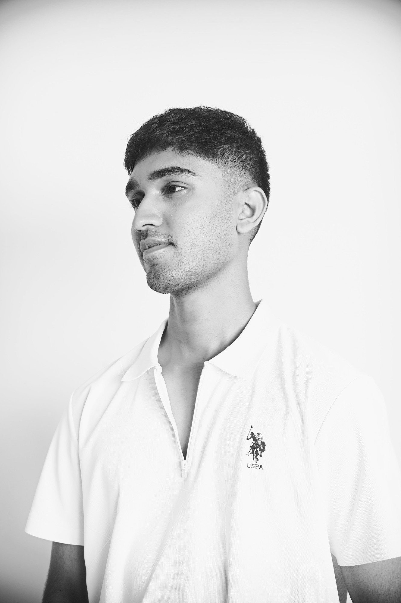

Industrial design for the hardware that moves energy.
Battery packs, fast chargers, and the parts people actually put their hands on. Bangalore.
Open to 2027 rolesListening

Hi! 👋 I’m Ken, an Industrial designer from Bangalore who’s been sketching since before I could even spell. I currently work at Exponent Energy, a deep-tech hardware startup as an Industrial Designer helping build and scale one of the world’s fastest charging solutions for EVs.
Over the years I’ve worked with India’s best design studios and hardware startups designing & building everything from tiny components to full-on charging systems. My process is practical, playful, and always hands-on. Outside work, I retreat into my analog world — film photography, retro music on vinyl, and anything that slows life down a bit.